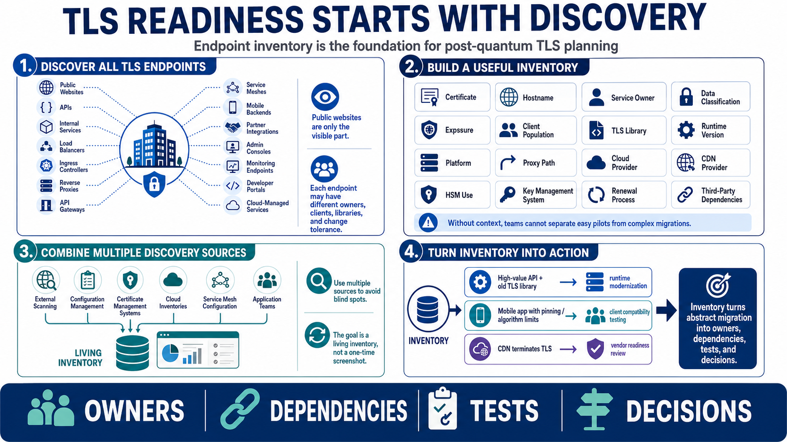

Inventorying TLS and Web Service Dependencies
Connecting to LMS... Progress: in progress

Narration
TLS readiness begins with endpoint discovery. Public websites are only the visible part. Organizations also run APIs, internal services, load balancers, ingress controllers, reverse proxies, API gateways, service meshes, mobile backends, partner integrations, administrative consoles, monitoring endpoints, developer portals, and cloud-managed services. Each endpoint may have different owners, different clients, different libraries, and different tolerance for change.
A useful inventory records the certificate, hostname, service owner, data classification, exposure, client population, TLS library, runtime version, platform, proxy path, cloud provider, CDN provider, hardware security module use, key management system, renewal process, and dependency on third-party products. That sounds like a lot, but without this context a team cannot tell which systems are easy pilots and which systems require vendor coordination or long client-update timelines.
Discovery should combine multiple sources. External scanning can identify public endpoints. Configuration management can reveal load balancers and ingress rules. Certificate management systems can expose issuance patterns. Cloud inventories can show managed TLS services. Service mesh configuration can reveal internal traffic paths. Application teams can explain clients and data flows that automated tools miss. The goal is a living inventory, not a one-time screenshot.
Cryptographic inventory is the foundation for PQC readiness because it connects risk to action. If a high-value API depends on an old TLS library, the next step may be runtime modernization. If a mobile app pins certificates or restricts algorithms, the next step may be client compatibility testing. If a CDN terminates TLS, vendor readiness matters. Inventory turns abstract migration into a list of owners, dependencies, tests, and decisions.